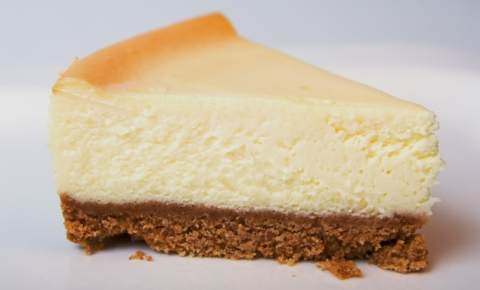

NO-BAKE Cheesecake

No-bake cheesecake is exactly what the name suggests.
The graham cracker crust and cheesecake filling never see the inside of the oven.
Ingredients
- grahm crackers - 2 packages
- unsalted butter - 11 tablespoon
- sugar - 2 tablespoons
- cream cheese - 500g
- condensed milk (sweetened) - 400ml
- fresh lemon juice - 60ml
- vanilla extract - 1 teaspoon
Method
- Put graham crackers in a large resealable plastic bag, and crush them with a rolling pin until very fine crumbs form.
- Pour crumbs into a medium bowl; stir in sugar. Add butter, and stir until well combined.
- Press the crumb mixture into a 9-inch springform pan, spreading it 1 1/2 to 2 inches up the side; press flat. Chill crust in freezer at least 10 minutes.
- Meanwhile, make the filling: Using an electric mixer set at medium-high speed, beat the cream cheese in a large bowl until smooth. Beat in the condensed milk a little at a time, scraping the sides of the bowl, as necessary. Beat in the lemon juice and vanilla.
- Pour the filling into the crust; smooth the top with a rubber spatula. Cover with plastic wrap, and refrigerate until firm, 2 1/2 to 3 hours.
- Unclasp sides of pan, and remove cheesecake.
- Enjoy!
Back to homepage